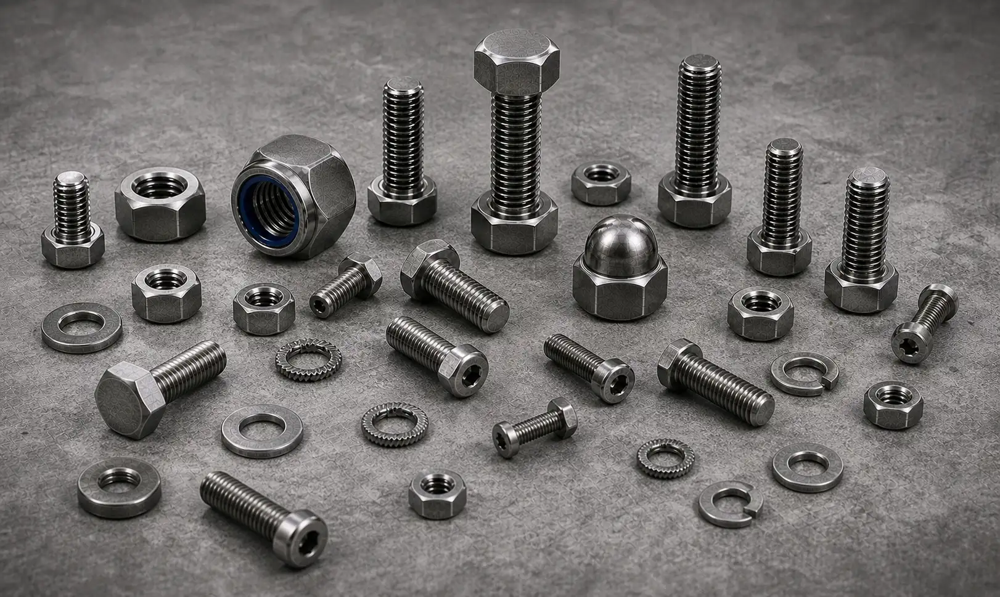

Nickel 200 and 201 Fasteners manufacturer in India supplying bolts, nuts, stud bolts, washers, and anchor bolts for chemical processing, food processing, electronics, heat treatment, and industrial applications.
Nickel 200 & Nickel 201 Fasteners are commercially pure nickel fasteners widely used in chemical processing, electronics, food processing, aerospace, and power generation industries. Known for their excellent corrosion resistance, thermal stability, and resistance to caustic alkalis, these fasteners are ideal for applications requiring high purity and reliable performance in aggressive environments. Gururaj Infradesigns is a trusted Nickel 200 & 201 Fasteners Manufacturer in India, supplying high-quality fastening solutions for critical industrial applications.
Our product range includes Nickel 200 and Nickel 201 bolts, nuts, stud bolts, anchor bolts, washers, and other industrial fasteners manufactured to international standards and project specifications.

Nickel 200 and Nickel 201 are commercially pure wrought nickel grades containing approximately 99% nickel. These materials provide excellent resistance to alkaline solutions, neutral salts, and a wide range of corrosive environments while maintaining good mechanical properties and thermal conductivity.
As premium grades within the broader range of Nickel Alloy Fasteners, Nickel 200 and Nickel 201 Fasteners are commonly used in chemical handling equipment, food processing plants, electronics manufacturing, and heat treatment applications where material purity and corrosion resistance are important considerations.
| Property | Details |
|---|---|
| Product | Nickel 200 & Nickel 201 Fasteners |
| Grades | Nickel 200 (UNS N02200), Nickel 201 (UNS N02201) |
| Standards | ASTM F467, ASTM F468, ASTM B160 |
| Product Types | Bolts, Nuts, Stud Bolts, Anchor Bolts, Washers |
| Sizes | M3 to M100 and Custom Sizes |
| Thread Type | Metric, UNC, UNF, BSW |
| Forms | Hex Bolts, Hex Nuts, Stud Bolts, U Bolts, Socket Head Bolts, Washers |
| Certification | Mill Test Certificates Available |
We supply hex bolts, socket head bolts, and U bolts manufactured from commercially pure nickel grades for applications requiring excellent corrosion resistance and reliable mechanical performance. These bolts are commonly used in chemical processing, electronics, and heat treatment equipment.
Our nickel alloy hex nuts provide dependable fastening performance in corrosive environments where material purity and resistance to chemical attack are essential. They are widely used in processing plants, tanks, and industrial equipment.
Nickel 200 and Nickel 201 stud bolts are extensively used in pressure vessels, flanged piping systems, reactors, and process equipment operating in demanding service environments.
We manufacture anchor bolts and washers for structural applications, industrial installations, and equipment foundations where long-term corrosion resistance and load-bearing performance are required.
Nickel 200 and Nickel 201 Fasteners offer exceptional resistance to caustic alkalis, neutral salts, and a wide range of corrosive chemicals. Their ability to withstand aggressive process environments makes them a preferred choice for chemical processing, food handling, and industrial manufacturing applications.
With a nickel content exceeding 99%, these fasteners provide excellent chemical stability and resistance to contamination. Their high purity makes them suitable for industries where product integrity, cleanliness, and material reliability are critical requirements.
Nickel 200 and Nickel 201 possess excellent heat transfer properties and maintain stable performance across a broad temperature range. This makes them suitable for heat treatment equipment, thermal processing systems, and elevated-temperature industrial applications.
These grades can be easily formed, machined, and manufactured into various fastener types while maintaining consistent mechanical properties. Their versatility allows them to be used across a wide range of industrial and engineering applications.
The combination of corrosion resistance, oxidation resistance, and material stability helps Nickel 200 and Nickel 201 Fasteners deliver dependable long-term performance while reducing maintenance requirements and replacement costs.
| Element | Nickel 200 (%) | Nickel 201 (%) |
|---|---|---|
| Nickel | 99.0 Min | 99.0 Min |
| Copper | Max 0.25 | Max 0.25 |
| Iron | Max 0.40 | Max 0.40 |
| Manganese | Max 0.35 | Max 0.35 |
| Silicon | Max 0.35 | Max 0.35 |
| Carbon | Max 0.15 | Max 0.02 |
| Property | Nickel 200 | Nickel 201 |
|---|---|---|
| Tensile Strength | 462 MPa Min | 403 MPa Min |
| Yield Strength | 148 MPa Min | 103 MPa Min |
| Elongation | 30% Min | 35% Min |
| Density | 8.89 g/cm³ | 8.89 g/cm³ |
Nickel 200 and Nickel 201 Fasteners are extensively used in reactors, pressure vessels, storage tanks, piping systems, and heat exchangers operating in corrosive environments. Their resistance to alkalis and chemical attack helps ensure reliable long-term service.
The high purity and corrosion-resistant properties of these grades make them suitable for food processing machinery, handling equipment, and sanitary systems where cleanliness and material stability are essential.
These fasteners are commonly used in electronic components, battery manufacturing facilities, electrical equipment, and specialized industrial systems where conductivity, purity, and corrosion resistance are important considerations.
Nickel 200 and Nickel 201 Fasteners perform reliably in furnaces, thermal processing units, and high-temperature equipment. Nickel 201 is particularly preferred for elevated-temperature applications because of its lower carbon content and improved resistance to graphitization.
The alloys are also specified for aerospace components, power generation equipment, and critical industrial systems requiring dependable mechanical performance, thermal stability, and resistance to challenging operating conditions.
| Property | Nickel 200 | Nickel 201 |
|---|---|---|
| Carbon Content | Higher | Lower |
| High Temperature Performance | Good | Better |
| Resistance to Graphitization | Good | Excellent |
| Corrosion Resistance | Excellent | Excellent |
| Industrial Usage | General Purpose | Elevated Temperature Service |
Both grades offer exceptional corrosion resistance and high nickel purity. However, Nickel 201 Fasteners contain lower carbon content, which helps prevent embrittlement and graphitization at elevated temperatures. For applications involving higher operating temperatures, Nickel 201 is often preferred, while Nickel 200 remains a reliable choice for general-purpose chemical processing and industrial service conditions.
As a trusted supplier of Nickel 200 and Nickel 201 Fasteners, we provide bolts, nuts, stud bolts, anchor bolts, and washers in a wide range of sizes and specifications. Our fastening solutions support OEM manufacturers, EPC contractors, engineering companies, and industrial buyers across diverse industries.
We focus on consistent product quality, technical support, and timely delivery to meet the requirements of critical industrial projects.
Quality remains an integral part of our manufacturing and supply process. All Nickel 200 & Nickel 201 Fasteners undergo inspection for dimensional accuracy, thread quality, material integrity, and compliance with applicable standards before dispatch.
As an ISO Certified Company, we are committed to delivering fastening solutions that meet industry requirements while maintaining consistency, reliability, and long-term performance.
Selecting the appropriate nickel alloy fastener depends on operating temperature, corrosion exposure, mechanical loading, and service conditions. Choosing the correct grade helps improve reliability, equipment life, and operational efficiency. Our team can assist in selecting suitable Nickel 200 and Nickel 201 bolts, nuts, stud bolts, anchor bolts, and washers based on your project requirements. We support OEM manufacturers, EPC contractors, engineering firms, and industrial buyers with dependable fastening solutions for critical industrial applications.